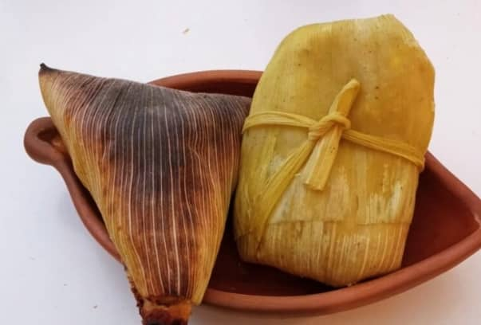

Platos Típicos de la region
TAMALES
los tamales estan hechos principalmente de maiz molido, al que se le agrega manteca de cerdo y se condimenta con sal y especias.
El maiz es uno de los ingredientes principales de la dieta local.
En tupiza los tamales son una parte impotante de la gastronomia tradicional y suelen prepararce durante festividades o celebraciones.
Su origen se remonta a las practicas culinarias indigenas prehispanicas de la region andina, donde el maiz ha sido un alimento basico durante siglos.
HUMINTAS
Las humintas son una especialidad boliviana a base de maiz, las humintas pueden ser tanto dulce como saladas, dependiendo de la preferencia personal o la ocasion.
La huminta es un plato tradicional dr origen precolombino, profundamente arraigado a la cultura andin, especialmente en paises como Bolivia, Peru y Argentina, en cada region andina, la huminta ha desarrollado caracteristicas propias,
en Bolivia, se axocia mucho con festividades, ferias y la comida callejera, especialmente en areas rurales. La huminta de Tupiza, por ejempl, destaca por su textura suave y la adicion de queso fresco local.

API
Bebida tradicional boliviana, espeza y caliente, hecha a base de maiz morado, canela y clavo de olor. generalmente se sirve en el desayuno.
El api es una bebida tradicional andina muy popular en Bolivia, especialmente en el altiplano y regiones del sur como Tupiza. Su su origen se remonta a las culturas prehispanicas de los Andes, que utilizaban el maiz como alimento basico en diversas preparaciones, tanto solidas como liquidas.
CHICHA DE MAIZ
bebida traicional fermentada a base de maiz, que acompaña muchas selebraciones y festividades de la region.
En Tupiza, la chicha de maiz es una bebida tradicional con raices indigenas que a sido parte de la vida cotidiana y las festividades locales durante siglos. Se elabora a partir de maiz fermentado y es consumida en celebraciones, especialmente en fiestas campesinas y ferias. en nuestra region la chicha no solo es una bebida refrescante, sino tambien un simbolo de identidad cultural, que se transmitio de generacion en generacion como parte de la herencia indigena y rural de tupiza.
MOTE
Maiz hervido y pelado que se sirve como acompañamiento de platos principales como el charquecan o carnes. es un alimento basico de la dieta local. En Tupiza, el mote ha sido utilizado como un alimento basico dfurante generaciones. Al ser un producto versatil. el mote puede acompañar una variedad de platos, como el charquecan, un plato tradicional de la region que tambien incluye carne seca de llama o de res. historicamente. el mote era una fuente importante de nutricion en las zonas rurales de Tupiza. Este acompañamiento sigue siendo valorado en la cocina localpor su simplicidad y su capacidad para complementar una gran variedad de comidas, manteniendose como un alimento central en la dieta rural.
CAZUELA DE MAIZ
La cazuela de maiz es un guiso tradicional que combina maiz tierno con carne, papas y otros ingredientes. Su historia en Tupiza refleja la mescla cultural que ocurrio durante la epoca colonial, cuando las tecnicas culinarias españolas se fucionaron con las tradiciones indigenas. Aunque el maiz a sido consumido en la region desde tiempos precolombinos, la cazuela como tal es un nplato que fue evolucionando con la incorporacion de ingredientes eurpeos como las carnes y las especias traida por los colonizadores. EnTuoiza, la cazuela de maiz es un plato que se prepara en ocaciones especiales, como reuniones familiares o festividades, y se ha convertido en un simbolo de la cocina local que reprecenta tanto la riqueza de los ingredientes nativos como la influencia de la gastronomia colonial.

CHARQUECAN
Plato tradicional andino que en Tupiza se prepara con charque de llama o res (canre deshidratada y salada). Se acompaña con papas cocidas. huevo frito, consumido especialmente en areas rurales.
El charquecan tiene raices prehispanicas y es parte fundamental de la dieta andina, en Tupiza el charquecan ha sido un alimento esencialpara las comunidades rurales, especialmente pastores y agricultores que necesitaban comida durante largas jornadas de trabajo. Con el tiempo, este plato se convirtio en un simbolo de la gastronomia local, enriquecido con ingredientes como las papas y el huevo.
CAZUELA DE CORDERO
Es un guiso tipico de cordero que se cocina a fuego lento con papas, zanahorias y otras verduras. Es popular en Tupiza y otras regiones del sur de Bolivia, siendo un plato reconfortante y nutritivo que se consume en ocasiones especiales.
El uso del cordero es tipico de las zonas rurales de Tupiza, donde la cria de ganado ha sido comun desde hace siglos. Durante la epoca colonial, la tecnica de hacer guisos a fuego lento se fuciono con los ingredientes locales. Este plato, preparado con papas y verduras, refleja la adaptacion de influencias europeas en la cocina de los andes que integra ingredientes autoctonos como la papa, que ha sido cultivafda en la region desde tiempos inmemorables.

FRITANGA
Es un plato fuerte y picante tipico de la region de tupiza. esta hecho con carne de cerdo frita, sazonada con aji rojo y especias. Se sirve con papas y a veces con mote. es especialmente consumido en festividades de la region
La fritanga tiene un origen que se remonta a la fucion de la gastronomia indigena con las influencuas españolas. La introduccion del cerdo en america por los colonizadores dio luigar a platos como este. donde se combina la carne frita con epecias locales como el aji rojo. En Tupiza. la fritanga es un plato festivo, consumido principalmente en eventos importantes o celebraciones familiares. Su sabor picante y el uso de ingredientes locales la han convertido en un simbolo de la gastronomia de la region de Tupiza.

AJI DE ARVEJAS
Este guiso de arvejas (guisantes) es un plato típico de Tupiza. Se cocina con ají rojo, cebolla, ajo y carne, generalmente de cordero o res. Se acompaña con papas cocidas o chuño, resaltando el uso de ingredientes tradicionales de la región.
El ají de arvejas es una variante local del tradicional ají boliviano. En la región de Tupiza, el cultivo de arvejas (guisantes) ha sido importante en las áreas rurales, y este plato refleja el uso de ingredientes propios de la zona. Las arvejas se combinan con ají rojo y carne, siguiendo una técnica que data de tiempos coloniales, cuando se introdujeron nuevos ingredientes y métodos de cocina europeos, pero siempre adaptados a los productos locales.

CALAPURCA
La calapurca es una sopa espesa tradicional que se prepara con carne de res, papas y a menudo chuño. Lo particular de este plato es que se hierve con piedras calientes, lo que le da un sabor especial. Es consumida en festividades y celebraciones andinas en Tupiza.
La calapurca es una sopa prehispánica que tiene una conexión directa con las ceremonias indígenas andinas. Su método de cocción, utilizando piedras calientes para hervir el caldo, es una técnica ancestral utilizada por las culturas de los Andes. En Tupiza, la calapurca ha sido un plato consumido en festividades y celebraciones comunitarias, especialmente en climas fríos, ya que es una sopa muy nutritiva y caliente. Su preparación tiene un simbolismo ritual, vinculado con la tierra y el fuego.
CHANFAINA
Un guiso de vísceras de cordero (principalmente hígado), cocido con cebolla, ají y especias. Es un plato fuerte y sabroso que se acompaña con papas cocidas o chuño. Es popular en áreas rurales de Tupiza, donde el cordero es común.
La chanfaina es un guiso que tiene orígenes coloniales, pero que se adaptó rápidamente a los ingredientes locales de Tupiza. Las vísceras de cordero eran utilizadas tanto por los campesinos como por las comunidades indígenas debido a su accesibilidad. Este plato, cocido con ají y especias, ha sido parte de la comida cotidiana en las zonas rurales, donde el uso del cordero es común. En la región, la chanfaina es apreciada por su sabor fuerte y su capacidad de aprovechar todas las partes del animal, una tradición que refleja la vida campesina.